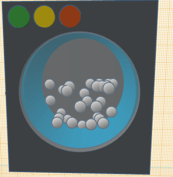

8/20/23 - This is my first journal entry!
Over the past week we as a class have learned so much due to the teaching of Mr. Poole. We have learned the engineering process, which has shown us the proper steps which seemed a bit basic and dull but once it got to the parts most of us didn't know it started to get me excited of all the things we didn't know about engineering. But one of my favorite things we did this week was when we had to guide a marble into a cup from around 30 feet because it allowed us as a class to build our teamwork skill and was generally one of the funnest thing we
My Favorite Dumpling Recipe
9/1/23 - This is my second journal entry!
This week we had learned about he main ideas of engineering discipline including always clean up after yourself, not to mess with others, and all the saftey prcedures. The project that was assigned to us was to make a design of our Rube Goldberg machine. I have started designing a Rube Goldberg machine with my fellow companions in a attempt to pop the balloon by starting a draph of the product we would like to create. The challenge tha twas assigned to us was to make a electronic device replica in a website called Tinkercad.
